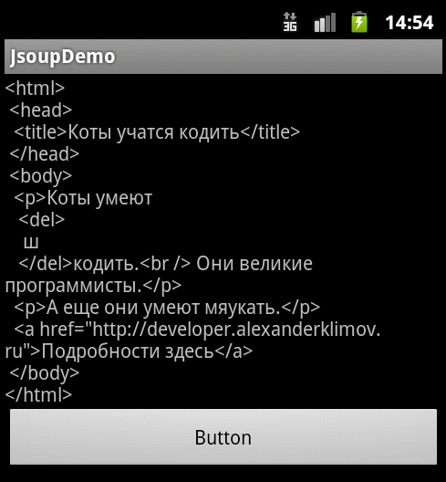

/* Моя кошка замечательно разбирается в программировании. Стоит мне объяснить проблему ей - и все становится ясно. */
John Robbins, Debugging Applications, Microsoft Press, 2000

/* Моя кошка замечательно разбирается в программировании. Стоит мне объяснить проблему ей - и все становится ясно. */
John Robbins, Debugging Applications, Microsoft Press, 2000
Общая информация
Подключаем библиотеку
Первый пример для знакомства
Извлекаем заголовок страницы
Извлекаем ссылки
Разбор текста с сайта
Разбор текста из файла
Первоначально статья писалась, когда деревья были большими, коты были котятами, Android был версии 2.3, а библиотека jsoup была версии 1.6.1.
С тех пор утекло много воды. Хорошая новость - библиотека подросла до версии 1.7.3, стала чуть меньше размером, стала быстрее работать (почти в два раза). Плохая новость - мои примеры, связанные с интернетом, перестали работать в Android 4.0, так как теперь явно запретили использовать сетевые операции в основном потоке.
Я оставлю старую версию статьи здесь. Если вы пишете программы под старые устройства, то всё остаётся без изменений. Примеры под новые устройства находятся в закрытой зоне 4 месяца.
Рассмотрим примеры работы с библиотекой jsoup. Java-библиотека jsoup предназначена для разбора HTML-страниц (парсинг), позволяя извлечь необходимые данные, используя DOM, CSS и методы в стиле jQuery.
Библиотека поддерживает спецификации HTML5 и позволяет парсить страницы, как это делают современные браузеры.
Библиотеке можно подсунуть для анализа URL, файл или строку.
Официальная страница библиотеки: jsoup Java HTML Parser, with best of DOM, CSS, and jquery
Скачиваем последнюю версию библиотеки jsoup (около 300 кб).
Запускаем Eclipse и создаем новый проект JsoupDemo. Добавляем на форму кнопку и TextView.
Щёлкаем правой кнопкой мыши на названии проекта в списке проектов (вкладка Navigator) и выбираем в контекстном меню пункт Properties. В диалоговом окне слева выбираем пункт Java Build Path и открываем вкладку Libraries.
Далее щелкаем на кнопке Add External JARs.., если вы сохранили скачанную библиотеку в отдельной папке. Как вариант, вы можете скопировать библиотеку в проект, тогда можно выбрать кнопку Add JARs.... На ваше усмотрение. Вам остается только указать путь к нужной библиотеке и можно приступать к разбору примеров.
Лично я пользуюсь другим способом. Просто перетаскиваю файл из Проводника в Eclipse в папку libs своего проекта и библиотека сама прекрасно регистрируется.
Для первого знакомства разберем простой пример. А потом будем его усложнять. Создадим переменную, содержащий html-текст. Далее вызываем библиотеку jsoup и смотрим на результат.
package ru.alexanderklimov.jsoupdemo;
import org.jsoup.Jsoup;
import org.jsoup.nodes.Document;
import android.app.Activity;
import android.os.Bundle;
import android.view.View;
import android.view.View.OnClickListener;
import android.widget.Button;
import android.widget.TextView;
public class JsoupDemoActivity extends Activity {
/** Called when the activity is first created. */
@Override
public void onCreate(Bundle savedInstanceState) {
super.onCreate(savedInstanceState);
setContentView(R.layout.main);
final Button butTest = (Button)findViewById(R.id.button1);
final TextView tvInfo = (TextView)findViewById(R.id.textView1);
butTest.setOnClickListener(new OnClickListener() {
@Override
public void onClick(View v) {
String html = "<html><head><title>Коты учатся кодить</title>"
+ "<body><p>Коты умеют <del>ш</del>кодить.<br> Они великие программисты." +
"<p>А еще они умеют мяукать.</p>" +
"<a href='http://developer.alexanderklimov.ru'>Подробности здесь</a>" +
"</body></html>";
Document doc = Jsoup.parse(html);
tvInfo.setText(doc.html());
}
});
}
}
Запустите проект и нажмите на кнопку. На экране отобразится наш текст. Но если вы присмотритесь внимательнее, то заметите некоторые отличия (скорее всего вы и не заметили). Я намеренно сделал две "ошибки". Во-первых, я не закрыл тег </head>, а также не закрыл тег </p> у первого параграфа. Однако библиотека сама подставила недостающие элементы. Именно так поступают и браузеры, если веб-мастер по невнимательности забывает ставить закрывающие парные теги.

Что мы сделали? Мы передали нужный html-текст библиотеке Jsoup и попросили его осуществить его разбор (метод parse()). В результате мы получаем экземпляр класса Document, из которого с помощью метода html() извлекаем уже обработанный текст, с которым можно работать дальше.
Если у вас всё получилось, то можно перейти к более сложным примерам. Подробная документация по методам и свойствам есть на сайте библиотеки. Вам нужно только пробовать.
Заголовок страницы находится в теге <title>. Чтобы получить текст заголовка, воспользуемся методом Document.title():
tvInfo.setText(doc.title()); // вернет строку Коты учатся кодить
Теперь попробуем поработать ссылками. В нашем тексте есть ссылка, которую можно разбить на несколько логических элементов: адрес, на который ведёт ссылка, текст в ссылке и полная ссылка, которая объединяет оба элемента.
Начнём с адреса ссылки:
Document doc = Jsoup.parse(html);
Element link = doc.select("a").first();
String linkHref = link.attr("href");
tvInfo.setText(linkHref); //http://developer.alexanderklimov.ru
Чтобы получить текст ссылки:
String linkInnerH = link.html();
tvInfo.setText(linkInnerH); //Подробности здесь
И, наконец, общий вариант:
String linkOuterH = link.outerHtml();
tvInfo.setText(linkOuterH);
Некоторые несознательные граждане могут меня обвинить в том, что я использовал синтетический пример, специально подготовленный для демонстрации. И хотят видеть пример с использованием ваших тырнетов. Ну что ж, вот вам пример.
Document doc = null;
try {
doc = Jsoup.connect("http://developer.alexanderklimov.ru/android/").get();
} catch (IOException e) {
// TODO Auto-generated catch block
e.printStackTrace();
}
String title = doc.title();
tvInfo.setText(title);
Я подключаюсь к самой известной странице в мире http://developer.alexanderklimov.ru/android/ и получаю его заголовок.
Не забудьте установить разрешение на подключение к Интернету вашей программе. Я сам сначала долго тупил, не понимая, почему моя программа вылетала с ошибкой. Но, посмотрев в честные глаза своего кота, я понял в чем моя ошибка и исправил ее. Коты рулят.
Последний пример, который мы не разобрали - это разбор текста из файла. В этом случае используется метод Jsoup.parse(File in, String charsetName, String baseUri):
File input = new File("/tmp/input.html");
Document doc = Jsoup.parse(input, "UTF-8", "http://example.com/");
Попробуйте самостоятельно. Удачи в программировании! Да пребудет с вами кот!
Библиотека jsoup и многопоточность. Продолжение